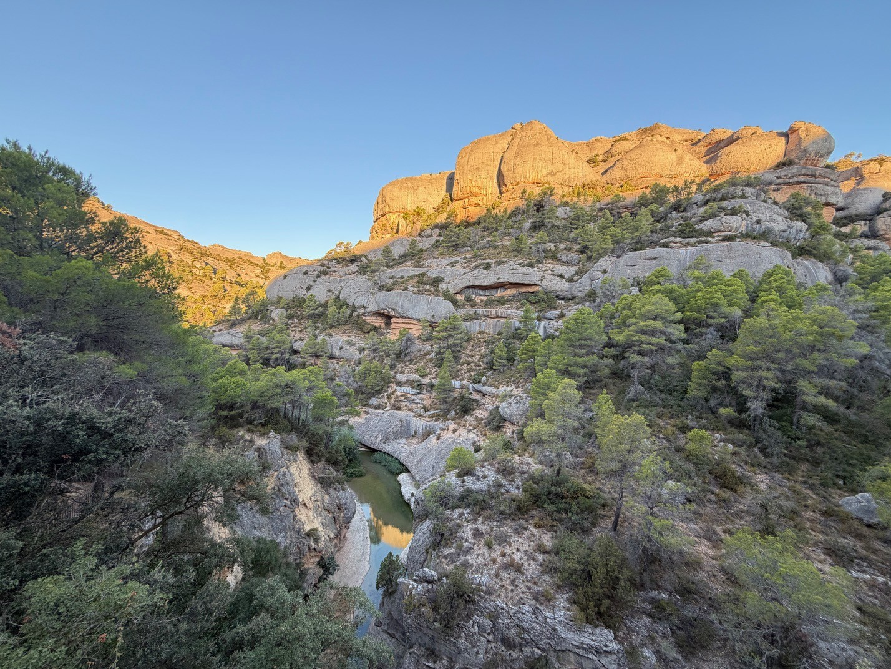
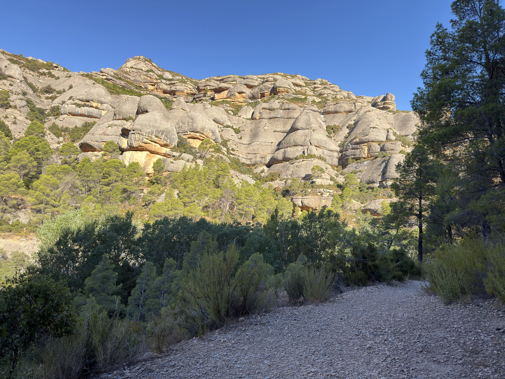
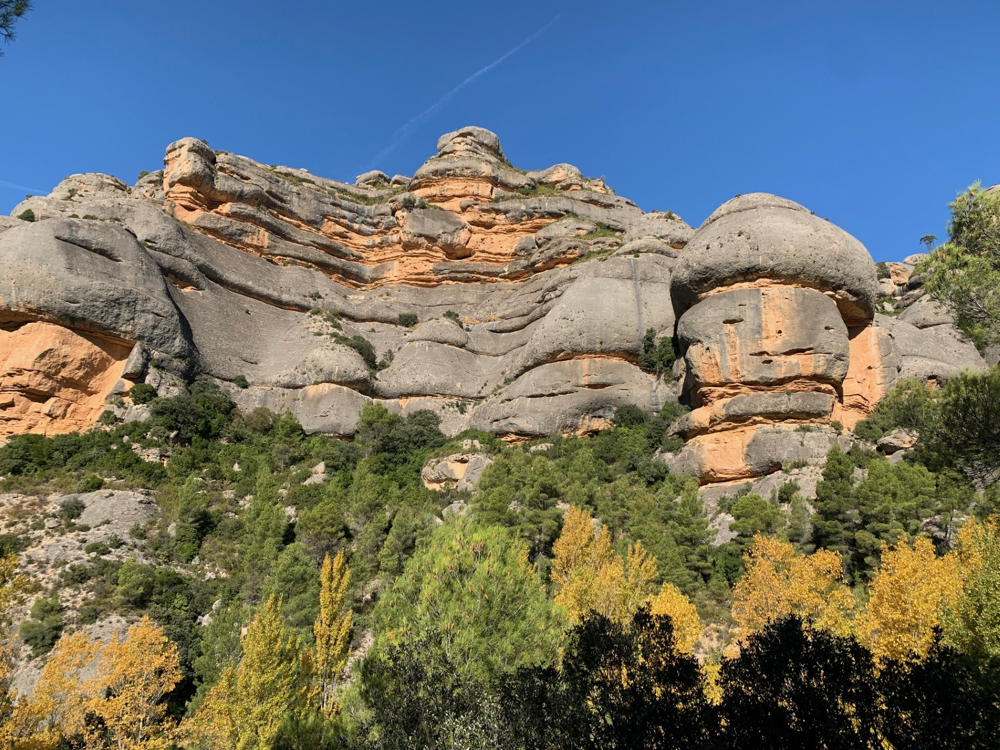
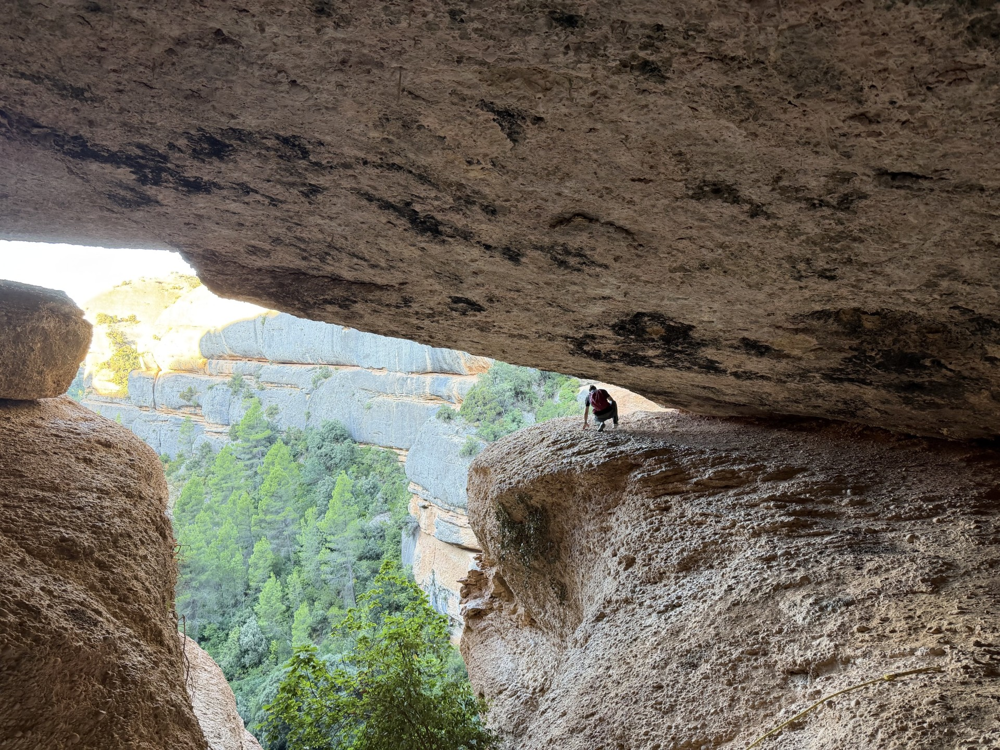
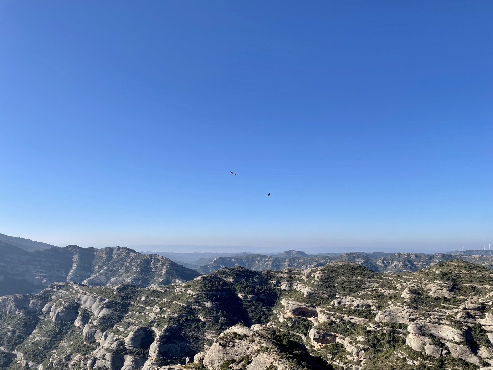
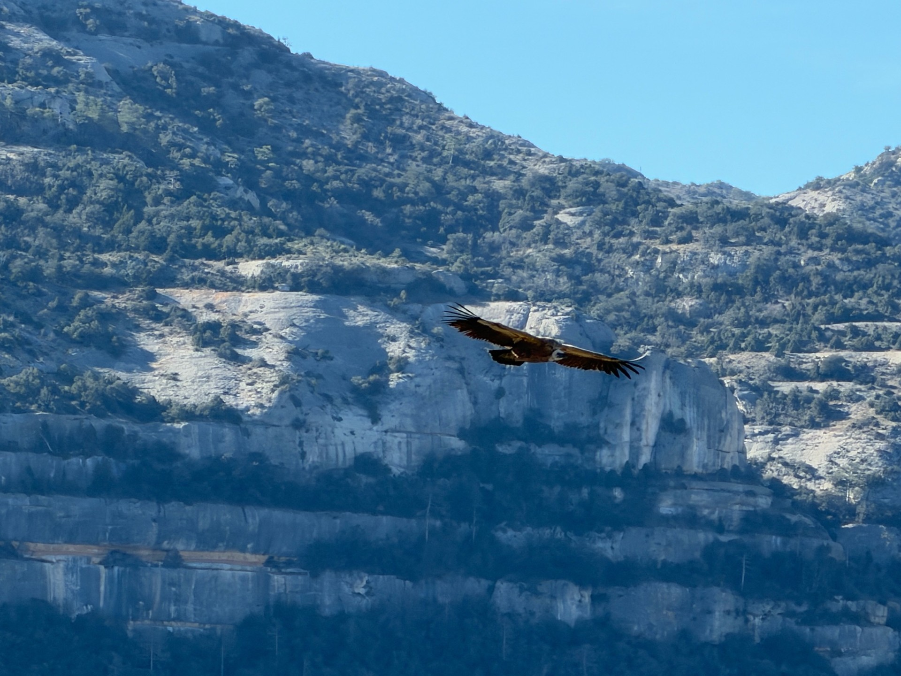
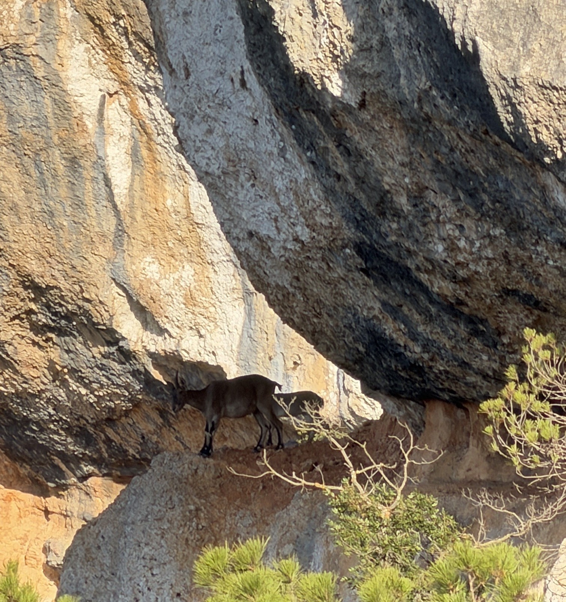

Congost de Fraguerau
The Hidden Gorge of Montsant, Where Rock, Water and Time Tell the Same Story
In the heart of Catalonia's Serra de Montsant Natural Park, beyond the vineyards of Priorat and far from the most travelled roads, there is a landscape that seems to belong to another rhythm of time.
The Congost de Fraguerau follows the Montsant River through a narrow corridor surrounded by enormous conglomerate walls, Mediterranean forest and strange rock formations that have been slowly shaped over millions of years.
It is not a landscape that reveals itself from a single viewpoint. Fraguerau is discovered gradually: following the river, passing beneath cliffs, crossing natural rock shelters and looking upward towards a sky where vultures circle above the mountains.
Here, geology, water, wildlife and human history occupy the same narrow valley.
{kind=link}

Where Water Begins the Story
Before entering the deepest part of Fraguerau, the Montsant River already reveals how powerful a patient landscape can be.
At Les Cadolles Fondes, water has worked directly into the rock, creating deep pools, polished surfaces and narrow channels. What appears calm today is the result of countless cycles of flowing water carrying sediment, gravel and stone through the same confined space.
During periods of low water, the forms of the rock become clearly visible. After heavy rain, the character of the place changes completely as the river fills those natural cavities and once again becomes an active geological force.
It is an appropriate entrance to Fraguerau, because almost everything that follows has been shaped by the same element.

A Landscape Sculpted by Time
The origins of this landscape go back millions of years, when rivers carried enormous quantities of sediment from surrounding mountain systems into a large basin.
Gravel, pebbles and larger fragments accumulated in thick deposits. With time, pressure and mineral cement bound these rounded stones together, creating the conglomerate that now dominates the Serra de Montsant.
From a distance the rock can appear solid and uniform. Up close, however, it reveals countless fractures, ledges, cavities and horizontal platforms.
These shapes have become part of the identity of Montsant. They also create a remarkable natural architecture for wildlife. Iberian wild goats can move across narrow ledges and inclined slabs of conglomerate with an ease that appears almost impossible from below.
Over millions of years, water has exploited fractures and weaker layers within the rock, gradually separating enormous masses of conglomerate and carving the narrow corridor through which the Montsant River now flows.
{kind=link}

The Geological Connection with Montserrat
There is something immediately familiar about the shapes of Montsant.
Rounded towers, vertical walls and strangely balanced masses of rock can recall another famous Catalan mountain: Montserrat.
The similarity is not accidental.
Both landscapes are strongly associated with thick formations of conglomerate. These rocks are composed of rounded fragments cemented together, but erosion does not act on every part of them equally.
Rainwater enters fractures and joints in the rock. Temperature changes, gravity and flowing water gradually enlarge those weaknesses. Softer material disappears more quickly, while resistant masses remain standing.
The result is the distinctive rounded relief found in both Montsant and Montserrat.
They are not simply the product of one enormous shared fault. Their characteristic appearance is primarily the result of geological structure combined with millions of years of differential erosion.
What looks permanent is, in reality, a landscape still being transformed.
{kind=link}

Shapes Hidden in Stone
One of the most fascinating aspects of Fraguerau is the way the landscape changes depending on where you stand.
Seen from below, enormous blocks of conglomerate become silhouettes. Human faces, animals and imaginary figures seem to emerge from the stone.
One of these formations is known as El Buda.
From the path beneath it, the arrangement of the rock creates the unmistakable impression of a seated figure watching over the gorge.
Of course, the mountain was not shaped with that image in mind. It is simply the result of erosion working along fractures and differences in the resistance of the conglomerate.
But places acquire stories as people pass through them.
Giving names to these formations turns geology into memory. A mass of rock becomes a landmark, and a landmark gradually becomes part of the identity of the valley.
{kind=link}

Beneath the Mountain
The fractures and erosion that shape the cliffs also create another characteristic feature of Montsant: natural shelters beneath the rock.
Locally, these shallow caves and overhangs are often known as baumes.
Some are large enough to provide shelter. Others become narrow passages where the trail seems to disappear directly beneath the mountain.
Moving through one changes the scale of the landscape completely.
A few metres earlier, the cliffs may have appeared distant and monumental. Suddenly the rock is directly above your head and the passage becomes so low that you have to crouch to continue.
These natural shelters also help explain why Montsant has attracted human occupation, hermits and travellers for centuries.
{kind=link}

A Different Landscape from Above
From the ground, Fraguerau feels enclosed.
The river dictates the direction of travel and the cliffs repeatedly block the horizon.
From above, the geography becomes easier to understand.
The gorge appears as a narrow incision through a much larger mountain system. Forest occupies the protected valleys while exposed conglomerate ridges rise above the vegetation.
The Montsant River can be followed as it twists between the rock formations, revealing how deeply water has penetrated into the massif.
Aerial photography changes the scale of the experience.
The enormous formations that dominate the trail become pieces of a much larger geological structure, and the route followed on foot becomes only a thin line through the mountain.
{kind=link}

Life Above the Cliffs
Fraguerau is not only a geological corridor.
The vertical walls, forests and inaccessible ledges create an extraordinary variety of habitats.
Above the gorge, one of the most characteristic silhouettes is the griffon vulture.
These enormous birds use columns of rising warm air to gain altitude, circling for long periods while barely moving their wings.
From the trail they can initially appear as small dark shapes in the sky. Only when one passes closer to the cliffs does its true size become apparent.
Montsant also supports other birds of prey, including peregrine falcons and golden eagles.
The combination of steep rock walls and rising air currents makes the massif particularly suited to large soaring birds.
Their presence adds another dimension to the landscape. The gorge exists at ground level, but much of its wildlife belongs to the vertical world above it.
{kind=link}

The Wild Goats of Montsant
Few animals seem more perfectly adapted to this landscape than the Iberian wild goat.
In Montsant, encounters with them are no longer unusual.
The conglomerate terrain provides exactly the type of environment in which these animals excel: steep slopes, narrow ledges, exposed rock and seemingly impossible routes between cliffs.
Watching them move changes the way you look at the mountain.
A wall that appears almost vertical to a person becomes a route. A small projection in the rock becomes a place to stand. A gap between two formations becomes a passage.
Their ability to move through these landscapes makes the relationship between geology and wildlife immediately visible.
The return and expansion of the Iberian wild goat in Montsant is also one of the most interesting wildlife stories of the massif. After disappearing from the area, animals began recolonising these mountains, and today they have once again become a familiar presence among the cliffs.
A River Through Stone
At the centre of everything is the Montsant River.
It is the element that connects almost every part of Fraguerau's story.
Water helped expose fractures in the conglomerate. It deepened passages through the mountain. It created pools such as the Cadolles Fondes and continues to support a completely different environment at the bottom of the gorge.
During dry Mediterranean periods, the river may appear quiet and fragile.
After heavy rainfall, the same channel can change rapidly, revealing the enormous erosive power that water can exert when confined between rock walls.
Along the river, vegetation becomes denser and temperatures can feel noticeably different from the exposed slopes above.
The contrast is one of the defining characteristics of Fraguerau: a humid corridor running through an otherwise dry Mediterranean mountain landscape.
The Human Story of Fraguerau
Long before Fraguerau became a hiking route, people were already moving through these mountains.
Paths connected settlements, fields and isolated areas of the massif. Dry-stone walls, agricultural terraces and old shelters still record that relationship between people and a difficult landscape.
But Montsant also became associated with another type of human presence: solitude.
The caves, overhangs and secluded valleys attracted hermits searching for isolation from the outside world.
The name Fraguerau is traditionally associated with Fra Guerau, one of the hermits linked to the history of this part of Montsant.
Not far from the gorge stands the small hermitage of Sant Bartomeu de Fraguerau, hidden among the rock formations and forest.
Its location makes sense only after walking through the valley.
The same cliffs that make the landscape spectacular also create isolation. The river, the forest and the enormous walls of conglomerate separate the interior of Fraguerau from the world beyond the massif.
For centuries, that isolation was precisely what some people came here looking for.
A Place of Silence
One of the most memorable qualities of the Congost de Fraguerau cannot easily be photographed.
It is the silence.
As the route moves away from the road, the sounds of modern life gradually disappear.
What remains is the movement of water, wind passing through the trees, footsteps against rock and the occasional call of a bird somewhere above the cliffs.
There is no single viewpoint that explains Fraguerau.
The experience is made from small discoveries.
A pool carved into stone.
A wall shaped like a human figure.
A narrow bauma beneath the mountain.
A vulture turning above the gorge.
Two wild goats standing on a ledge that seems impossible to reach.
Individually, they are small moments.
Together, they tell the story of the place.
Where Rock and Time Meet
The Congost de Fraguerau is more than a beautiful hiking destination.
It is a landscape where different timescales exist together.
The conglomerate records rivers that crossed this region millions of years ago.
The gorge records the slow persistence of erosion.
The hermitage and old paths record centuries of human presence.
And the animals moving through the cliffs remind us that this apparently harsh landscape is still very much alive.
From Les Cadolles Fondes to the deepest parts of the gorge, almost everything here has been shaped by the same relationship between stone and water.
The process continues today.
Rain enters the fractures.
The river carries sediment downstream.
Vegetation slowly takes possession of abandoned paths.
Wild goats continue to cross the cliffs.
Vultures rise above them.
Fraguerau does not need a single dramatic moment to be extraordinary.
Its story has been written slowly.
"Here, the landscape is not defined by a single moment, but by millions of years of water, stone and silence."
Photo Notes
Location: Congost de Fraguerau, Serra de Montsant Natural Park, Catalonia
Photographic locations: Les Cadolles Fondes, Congost de Fraguerau and Serra de Montsant
Subjects: Landscape, Geology & Wildlife
Aircraft: DJI Mini 2
Category: Landscape & Nature Photography
Photographer: Carles Torres